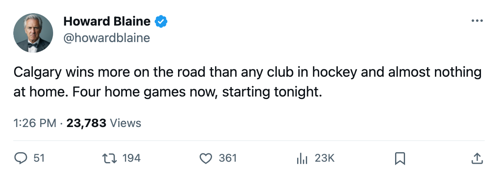
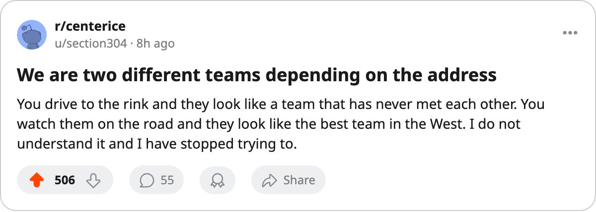

The Widest Split in Hockey: Calgary Is 14-6 on the Road and 5-11 at Home
The Flames have won more road games than any club in the league, and they open a four-game home stand tonight holding the fourth-worst home record in the sport.
 Howard BlaineSenior writer, The Blaine Rankings · The Hockey Gazette
Howard BlaineSenior writer, The Blaine Rankings · The Hockey Gazette
Calgary has won 14 of its 20 road games and 5 of its 16 at home.  Calgary Flames opens a four-game home stand in Calgary tonight against
Calgary Flames opens a four-game home stand in Calgary tonight against  Mighty Ducks of Anaheim, with
Mighty Ducks of Anaheim, with  Montreal Canadiens,
Montreal Canadiens,  Tampa Bay Lightning and
Tampa Bay Lightning and  Minnesota Wild to follow before Jan. 5.
Minnesota Wild to follow before Jan. 5.
The two records are the widest apart in the league. Calgary's home win share is .313. Its road win share is .700. The gap of minus .388 is the largest in hockey, in either direction, and the schedule has stopped moving on them: the next four games are all in Calgary.
They sit 5th in the Western Conference with 41 points through 36 games, 1 point behind  Columbus Blue Jackets and level with
Columbus Blue Jackets and level with  Colorado Avalanche. Ninth-place Minnesota Wild is 3 points back, and Calgary holds a game in hand on the Wild. The payroll is $52.08M, which is $1.27M for every point, the seventh-best rate in the league.
Colorado Avalanche. Ninth-place Minnesota Wild is 3 points back, and Calgary holds a game in hand on the Wild. The payroll is $52.08M, which is $1.27M for every point, the seventh-best rate in the league.
The Widest Splits in the League
| club | home | away | home share | away share | gap |
|---|---|---|---|---|---|
 Nashville Predators Nashville Predators | 15-1 | 8-11 | .938 | .421 | +.516 |
 Los Angeles Kings Los Angeles Kings | 7-8 | 3-17 | .467 | .150 | +.317 |
 Detroit Red Wings Detroit Red Wings | 13-7 | 5-10 | .650 | .333 | +.317 |
 Phoenix Coyotes Phoenix Coyotes | 10-9 | 4-13 | .526 | .235 | +.291 |
 Buffalo Sabres Buffalo Sabres | 11-7 | 6-10 | .611 | .375 | +.236 |
 Philadelphia Flyers Philadelphia Flyers | 8-10 | 10-6 | .444 | .625 | -.181 |
| Colorado Avalanche | 7-12 | 10-7 | .368 | .588 | -.220 |
 Boston Bruins Boston Bruins | 8-10 | 13-4 | .444 | .765 | -.320 |
 San Jose Sharks San Jose Sharks | 3-14 | 9-9 | .176 | .500 | -.324 |
| Calgary Flames | 5-11 | 14-6 | .313 | .700 | -.388 |
Nashville sits at the other end, 15-1 at home and 8-11 away. Both clubs have been built around one venue, but Nashville opens a home stand with 15 wins on its ledger and Calgary opens one with 5.
No Club Has Won More on the Road
Away from Calgary the Flames are 14-6. The .700 share is bettered by three clubs:  Toronto Maple Leafs at .867,
Toronto Maple Leafs at .867,  New Jersey Devils at .813 and Boston Bruins at .765. No club has won more road games.
New Jersey Devils at .813 and Boston Bruins at .765. No club has won more road games.
 Jarome Iginla86 has 27 goals and 47 points in 36 games, 22.8 minutes a night, at 28 years old. He took the Richard and the Pearson last season, and his production has not dipped on the road or anywhere else.
Jarome Iginla86 has 27 goals and 47 points in 36 games, 22.8 minutes a night, at 28 years old. He took the Richard and the Pearson last season, and his production has not dipped on the road or anywhere else.
 Roman Turek79 has started 29 games in the Calgary net, 14 wins and 15 losses, with a 2.44 goals against and a .881 save percentage. He has one shutout this season.
Roman Turek79 has started 29 games in the Calgary net, 14 wins and 15 losses, with a 2.44 goals against and a .881 save percentage. He has one shutout this season.
At Home, the Same Roster
In Calgary the Flames are 5-11. Only San Jose Sharks (3-14),  Chicago Blackhawks (4-15) and
Chicago Blackhawks (4-15) and  Washington Capitals (4-11) have won a smaller share of their home decisions.
Washington Capitals (4-11) have won a smaller share of their home decisions.
The same defense that gives up 91 goals across 36 games gives up its share in front of a home crowd, and the same forward group that fills the net on the road goes cold in its own rink. The Flames have scored 90 and allowed 91 on the season.
The home stand is four games in six days. Anaheim tonight, Montreal on Dec. 31, Tampa Bay on Jan. 2, Minnesota on Jan. 4. If the .313 holds through those four, the road record will not have been enough.
The Division Has Been Decided by a Goal
Calgary has played 11 games inside the Northwest and gone 6-5, with 3 of the 6 wins coming in overtime. The Flames have scored 32 and allowed 31 across those 11 games, a plus-one over more than a quarter of the divisional schedule.
This desk wrote on Dec. 1 that Calgary beats the Northwest only when the game goes past 60 minutes. That has not changed. Against  Vancouver Canucks the season series is four games and 1-1-2 to Vancouver, with Calgary outscored 15-12. Against Detroit Red Wings it is three games and Calgary has won all three, each by a goal, 8-5 in total.
Vancouver Canucks the season series is four games and 1-1-2 to Vancouver, with Calgary outscored 15-12. Against Detroit Red Wings it is three games and Calgary has won all three, each by a goal, 8-5 in total.
The division table sits 3 points across from 4th to 8th. Calgary is in the middle of it with the worst home record of the five.
Fourth Place Is One Point Away
The West is 4 points wide from 4th to 9th: Columbus 42, Calgary 41, Colorado 41, Vancouver 40, Anaheim 39, Minnesota 38. Minnesota has played 37 games to Calgary's 36. 46 games remain for the Flames out of the 699 left in the league.
The schedule hands them the fix and the problem at once. Calgary gets four straight at home, where it has won 5 of 16, and the clubs chasing it get the same nights off. A road team this good should not be this far down the table. The next week decides whether the home ice stays a disadvantage or becomes the thing that carries them.
Anaheim is at Calgary tonight.

